Deploying and Debugging Your Code
Debugging is a generic term for a process used to find the root causes of defects in a system. The system in question could be hardware, software or just about any kind of process. In the context of the Pix-6T4, we’re going to focus on software debugging for the most part but we’ll also discuss hardware debugging: even though the symptoms, root causes and tools will be different, the methodology will be similar.
Debugging on the Netduino with Visual C#
Debugging embedded system software can be a slow and tedious process on platforms where an interactive debugging tool is not available: in that case, the developer is often forced to spend time instrumenting the defective code with ‘breadcrumbs’ designed to leave traces of its execution in a file or directly to a terminal emulator. It’s up to the developer to follow that breadcrumb trail to understand where things went wrong, repeating the process until the problem is discovered. Eventually, the breadcrumbs have to be removed before the application is released to production as verbose tracing tends to slow down the execution of the program. Fortunately for us, Visual Studio has an outstanding interactive debugger which enables us to execute programs step-by-step, to stop at any point, to examine and alter the state of variables along the way without the overhead of instrumenting the code with tracing statement every time something goes wrong. On the Netduino mini, all debugging takes places over a serial port. For this reason, there are two serial ports on the Netduino mini to prevent interferences between ‘debugger messages’ and ‘application messages’ which would otherwise collide if they were to be sent over the same port.
On the Pix-6T4 console, we chose to use COM1, the RS232 serial port, for deployment and debugging code.

In order to use the Netduino mini’s RS232 port, you will need a USB to RS232 adapter cable unless your machine has a built-in RS232 DB9 connector. Such connectors are getting more and more rare, especially on laptops. The good news is that USB to RS232 cables can be found at very good prices. For instance, Monoprice carries them for less than $10
Connecting the USB to RS232 adapter cable to the Netduino
Using three female prototyping wires, connect the DB9 end of the USB-to-RS232 cable to the Netduino-mini header pins as shown on this diagram:
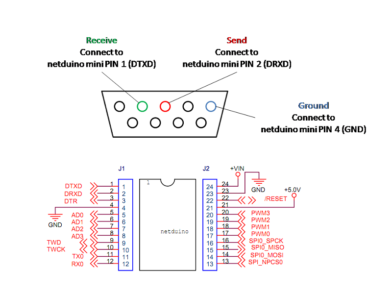
The DB9 end of the cable should look like this:
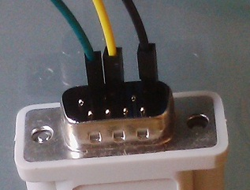
On the Netduino mini side, it should look like this:
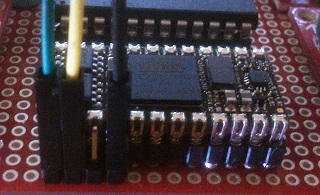
Once all the connections have been made, plug-in the USB end of the USB-to-RS232 cable into your computer. In some instances, you may need to install a driver coming with the cable first. When you plug the cable in, Windows will search for the appropriate driver and will assign a serial communication port to the USB device:
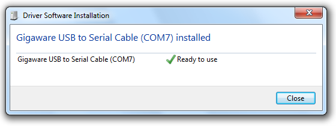
You can find out which COM port is assigned to the cable at anytime by opening the “Devices and Printers” (USB plug icon) from the system tray. Make a note of this communication port as we will need to configure Visual C# in the next section.
Testing the serial connection to the Netduino
Before going any further, it’s good to ensure that the serial cable wiring to the Netduino is correct and that everything works. To this end, the .Net Micro Framework SDK offer a tool called “MFDeploy.exe”, which is perfect for that purpose.
- In the Start Menu, locate the “Microsoft .Net Micro Framework 4.x” menu item and expand it
- Clicking on the “Tools” menu will open up Explorer
- In the “Tools” directory, start “MFDeploy.exe”. Be careful as there are multiple files named “MFDeploy” in that location, which might be confusing if the file extensions aren’t visible.
- In MFDeploy.exe, in the “Device” section of the dialog, select “Serial” and assign the communication port corresponding to the USB-to-RS232 cable.
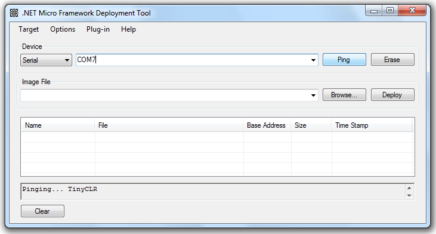
Click on the “Ping” button. If everything is correctly wired up and assigned, MFDeploy will display “Pinging... TinyCLR” in its output window. If this is not the case, MFDeploy, will eventually time out. You need to go back to the beginning of this section and double-check connections and COM port assignments, starting with making sure that the “send” and “receive” wires have not been swapped by mistake.
Configuring Visual C# for communication with the Netduino mini
In Visual C#, bring up the properties for any given project from the Project menu:
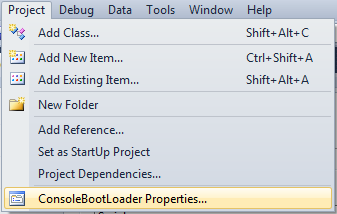
In the Project Properties page, click on the “.Net Micro Framework” tab and in the “Deployment” section:
- Select “Serial” for the “Transport” option
- Assign the COM port assigned to the USB-to-RS232 cable to the “Device” option COM7 in this case
- Make sure to save these changes before closing the Project Properties page
At this point, the project can be deployed to the Netduino mini or can be debugged.
Setting Breakpoints
On any given line of code in a project, hitting F9, or clicking in the gray margin all the way to the left, will place a red dot in front of the line and will highlight it. This will cause the execution of the program to stop when it reaches it.
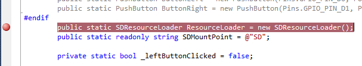
Starting the debugger
Hitting F5 in Visual C# will start a debugging session. It will also cause in a number of things to happen before the debugger starts:
- The solution will be compiled if needed
- The solution will be deployed to the Netduino mini. Deploying is the term describing the process of copying the binary files making up the application to the flash memory of the microcontroller
- The application will begin execution under the control of the debugger
Stepping In, Out and Over code
During the execution of the application, whenever a breakpoint is encountered, marked by a yellow pointer, you will have a few options:
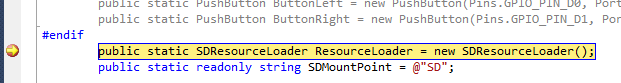
- Stepping In (F11): if the breakpoint is set on a line where a function will be called, the next step the debugger will take will be to enter the function, stopping on the first line:
- Stepping Over (F10): will cause the program execution to move to the next statement and stop. When stepping over a function which has a breakpoint defined within it, the debugger will also stop on that breakpoint.
- Stepping Out (Shift+F11): whenever the execution of the program is stopped within a function, hitting Shift+F11 will cause the debugger to exit the function immediately and stop on the statement following the function call.
- Resuming the Execution (F5): if a debug session is in progress and has stopped on a breakpoint, hitting F5 will cause the execution of the program to continue until the next breakpoint is encountered.
- Stopping the debugger (Shift+F5): at any time during a debugging session, hitting Shift+F5 will stop the execution of the program under the control of the debugger.
Watching and changing variables at run time
- It is possible to examine any variable within the scope of the debugger by hovering with the mouse cursor over it. In the example below, the ‘folders’ variable is being examined
- If a variable is to be accessed often, using the ‘pin’ icon will ensure that the variable remains accessible at all times in the editor while the debugger is running. A blue pin will be shown in the margin
- Hovering over the blue pin will show the last known value of the variable even if the debugger is no longer running
- Pinned variables allow for commenting, also known as DataTips
- It is also possible to create a variable ‘watch’ by right-clicking on the variable and selecting ‘Add Watch’, causing the ‘Watch’ window to appear with the newly added variable
- It is possible to change the value of a variable at any time by right-clicking on it and selecting ‘Edit Value’. Be careful when doing this as unexpected values may cause exceptions in the application
For example, consider the scenario where a configuration string is being used to initialize two specific variables named ‘foo’ and ‘bar’:
enum ConfigIndex {
Foo,
Bar,
}
public static void Main() {
var config = "foo=123,bar=456";
var configPairs = config.Split(new char[] { ',' });
var foo = configPairs[(int) ConfigIndex.Foo].Split(new char[] { '=' })[1];
var bar = configPairs[(int)ConfigIndex.Bar].Split(new char[] { '=' })[1];
Debug.Print("Configuration: foo=" + foo + ", bar=" + bar);
}
If the program runs as-is, everything works fine and the output window shows:
Configuration: foo=123, bar=456
Now, imagine that during a debugging session, the ‘config’ string is edited and ‘bar’ is removed from it:
var config = "foo=123";
The code which expects to find and assign a value to ‘var bar’ will be unhappy and will throw an exception like this:
#### Exception System.IndexOutOfRangeException - 0xa9000000 (1) #### #### Message: #### XBeeTest.Program::Main [IP: 0032] #### A first chance exception of type 'System.IndexOutOfRangeException' occurred in XBeeTest.exe An unhandled exception of type 'System.IndexOutOfRangeException' occurred in XBeeTest.exe
Debugging Strategies
The mechanics of working with the debugger are simple to understand. The real work is finding the cause of the issue(s) causing an application to malfunction. To this end, there are various debugging strategies to consider as well as general guidelines that will tend to hold true in most cases:
- Reducing the number of variables: if your program’s logic manipulates many variables, it will be useful to isolate which ones are directly related to the issue you’re trying to debug. By reducing complexity in this fashion, it will be easier to track the relevant state changes leading to the identification of the root cause.
- Only change one thing at a time and observe the effects of that change: as issues are identified in the program, multiple changes to the code may be necessary to resolve problems. However, it is advisable to only alter the code’s logic in a single area at a time, then taking another pass with the debugger to ensure that the change had the desired effect and that everything else continues to work properly. When altering the data in a variable, the same discipline needs to be followed: only change one specific value at a time and observe the effect of the change on the program’s flow and response. You also must ensure that independent variables remain unchanged. If a changed variable has dependent variables, you will need to observe carefully the effects of changing that variable on the others.
- Keep in mind that multiple passes may be required before the root of an issue becomes apparent, so patience is key.
Where to place breakpoints?
Place a breakpoint at a location in the code just before the problem appears. Then, slowly step through the code, one line at a time, reviewing the logic of the application and the content of the variables against the expected behavior of the application. If you’re not exactly sure where the issue starts, set multiple breakpoints at key locations in the application where you can observe the behavior before resuming execution. Eventually, you will narrow down which section of the code is problematic.
Breaking down complexity
Sometimes, an application can become too large, with too many functions or too many variables at the same level or functions that are too long, which may make the logic of the application difficult to understand and debugging a painful exercise. When this happens, it’s good to step back and rethink the overall design of the application itself, breaking it down into smaller objects, each one specializing in a single task and only handling the variables that it needs for that specific task.
This programming style is known as Object Oriented Programming and is a deep subject in itself, beyond the scope of this book. There are many online resources that explain what OOP is, how to apply it. BlackWasp (http://www.blackwasp.co.uk/CSharpObjectOriented.aspx) has excellent free tutorials on the subject, focusing on C#.
Tracing
On occasions, it may be useful to add tracing to the application and Visual C# makes it easy to add debug-only functions for this purpose which will be automatically removed from the code when it is compiled in Release mode.
Add a “using System.Diagnostics;” statement at the beginning of the file where tracing will be used, then create a function like this
[Conditional("DEBUG")]
private static void DebugTrace(string logMessage) {
Debug.Print(logMessage);
}
Call DebugTrace() with any desired message wherever a trace is needed such as the beginning and the end of a function. In this sample, Debug.Print() is used but writing to a file on the SD card or writing data to a secondary serial port would be equally effective.
The output of Debug.Print() goes to the Output Window of Visual C#:
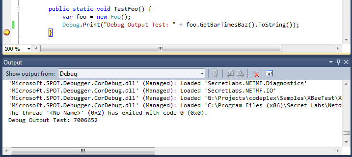
Note that the Conditional attribute can only be applied to functions with a void return type.
Using Assertions
An assertion is a debug statement in the code which evaluates a condition and expects the result to be ‘true’. If the result of the evaluation is ‘true’, nothing happens and the debugger skips the assertion statement. If the evaluation returns ‘false’, the debugger stops on the line with the assertion. Consider the following example:
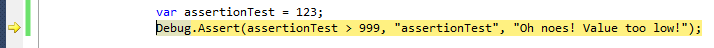
The Debug.Assert() statement expects the variable ‘assertionTest’ to be greater than 999. However, the variable was initialized with a value of 123. As a result, the debugger halts on the line. Assertions such as this one enable the developer to validate assumptions about a program during development, identifying potential problems early on. Assertion statements are eliminated from the code when it is compiled in Release mode, so there’s no runtime overhead or unexpected stops to be concerned about once the application is being used in the field.
Overriding ToString()
ToString() is a handy function supported by every object type in C#. When used with simple data types such as integers, floats, strings, ToString() produces a string representation of the data held in the variable. On Class types, ToString() returns a string representing the name space and the name of the class. In the latter case, this behavior may not be desirable when many instances of the same object class exist as there’s nothing to distinguish between them. It would be more useful to show the values of important properties or fields within the class instead.
This is where overriding ToString() comes into play. Consider the function in bold below:
public class Foo {
public int Bar { get; set; }
public Foo() {
Bar = 123;
}
public override string ToString() {
return base.ToString() + "= " + Bar.ToString();
}
}
The behavior of ToString() for class Foo is redefined using the ‘override’ keyword and filling out the body of the function with a custom code: base.ToString() still returns the name space and name of the class but now, we’re also adding to it the content of the Bar property.
var foo = new Foo(); Debug.Print(foo.ToString());
Creating an instance of Foo() and calling ToString() now results in this output: “ConsoleBootLoader.Foo= 123”
Without overriding ToString(), the output would have been a plain “ConsoleBootLoader.Foo” without any other information.
Using the DebuggerDisplay attribute
There are occasions when overriding ToString() strictly for debugging purposes is not an option because it is needed as part of the core functionality of the application. This is where using the ‘DebuggerDisplay’ attribute can come in handy and will replace the output of ToString() when hovering over the object in the debugger.
The ‘DebuggerDisplay’ attribute can be assigned to a class or a structure like so:
- Add a ‘using System.Diagnostics;’ statement at the beginning of the file where the attribute will be used
- Tag the object with a [DebuggerDisplay(“<expression,...>”)] statement. The parameter string of the attribute is composed of comma-separated name-value pairs. The value is placed between curly braces can be a reference to a property of the class, a method call, or any valid C# expression
- When hovering over the class instance, the debugger will use the definition provided by the ‘’DebuggerDisplay’ attribute instead of the value returned by ToString()
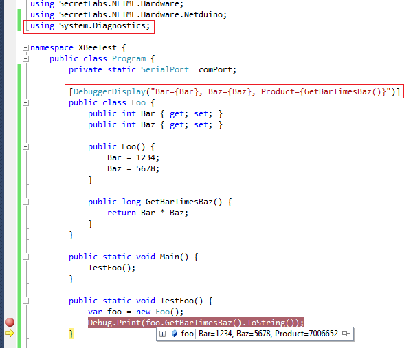
Using software breakpoints
While seldom used, it is possible for the application to break itself by using this statement:
Debugger.Break();
This may be interesting in situations where the conditions determining if the debugger should stop are complex, possibly involving the state of many variables and/or many iterations before the conditions leading to the issue being investigated manifests itself. In that case, it may be useful to create a function encapsulating all these conditions and the software breakpoint under the control of a single function like so:
#define SOFTBREAK
using System.Diagnostics;
…
[Conditional("SOFTBREAK")]
private static void CheckConditionsAndBreak(int foo, int bar, float baz, string message) {
if( foo < 0 && bar > 0 && baz == 123.456 || message == "foobar") {
Debugger.Break();
}
}
Using the Immediate Window
When a program is stopped at a breakpoint, it’s possible to use Visual C#’s “Immediate Window” to execute debug commands instantly such as:
- Viewing the content of a variable or object using the ‘?’ command
- Changing the content of a variable or property using the ‘=’ assignment command
- Invoking an object method using the ‘?’ command
The “Immediate Window” interprets commands on the fly and shows the results immediately. The nice thing about it is that the entire scope of the application is accessible this way which is faster and easier than browsing and expanding objects from the Watch or the Locals Window.
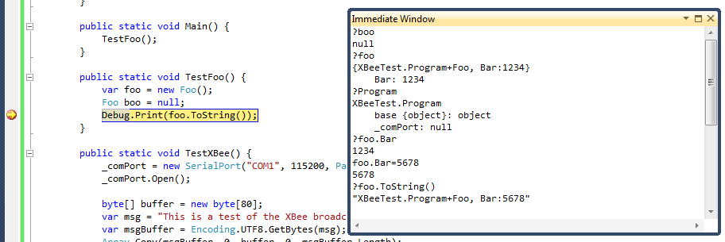
Checking for the presence of a debugger
It is possible to check within the application itself if it is running under the control of a debugger and alter the behavior accordingly using a simple test statement like this:
if (Debugger.IsAttached == true) { /*Do something else*/
}
Configuring debugger options
Under the \Tools\Options menu, Visual C# has options to customize the behavior of the debugger. For instance, Visual C# has an option to “Step over properties and operators” which can be frustrating if you’re not aware that it’s there and you’re trying to debug your own properties or custom operators. Hit F1 to bring up the online help explaining what these options do.
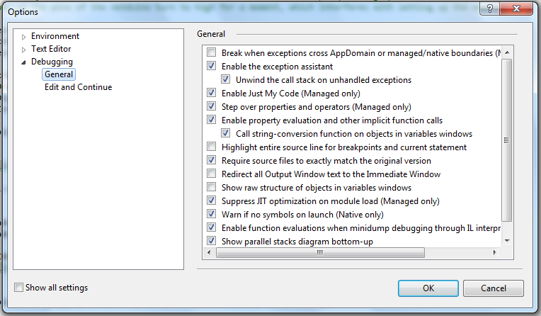